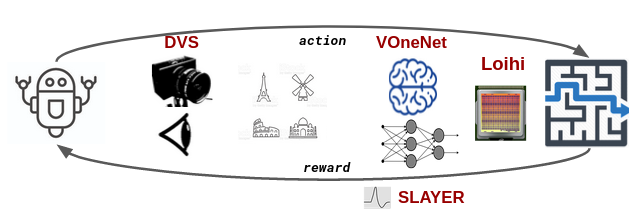
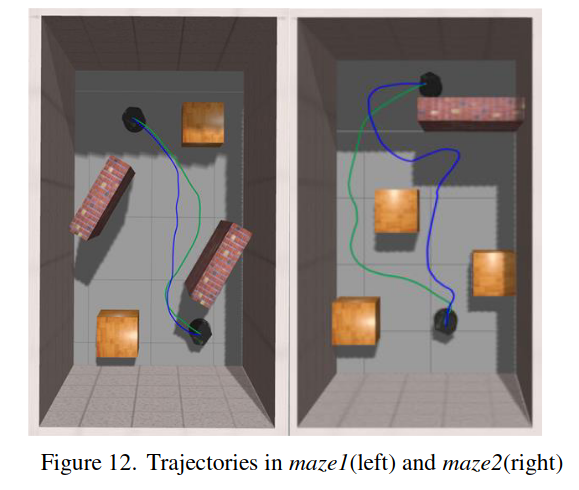
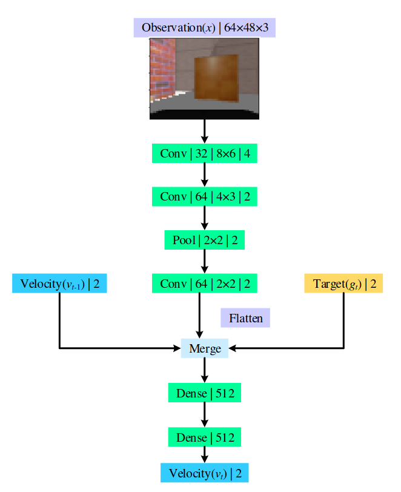
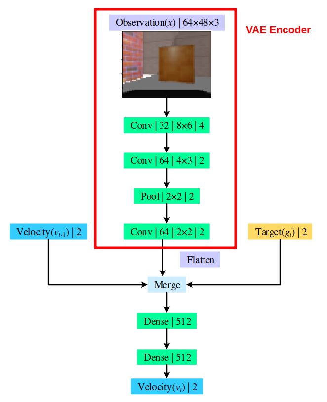
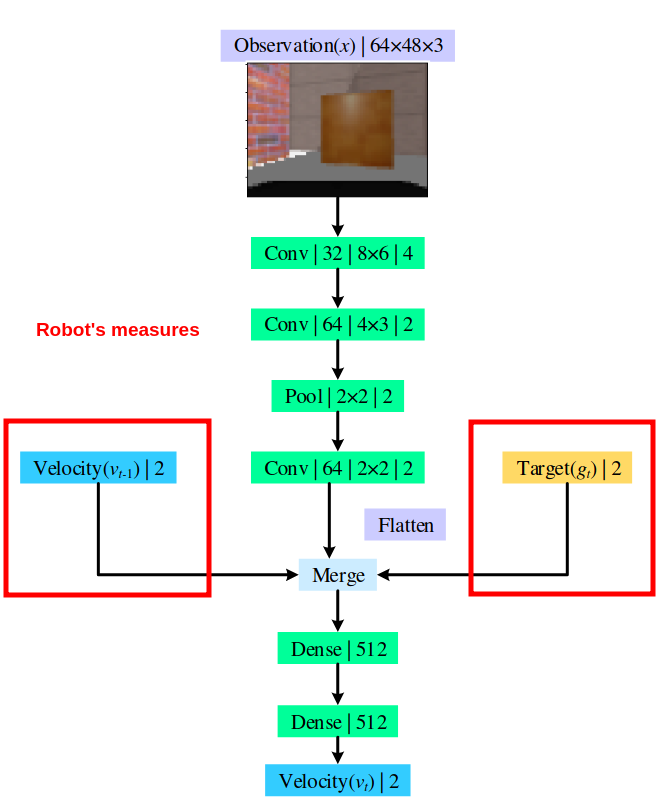
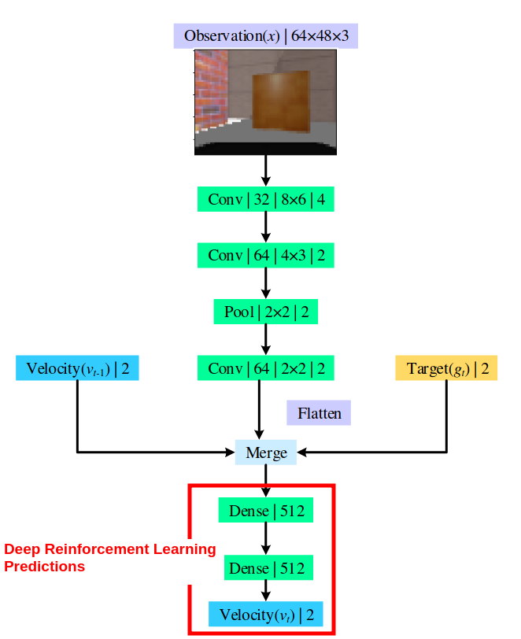

Sensory Motor Integration
Some ideas and questions
Sami BARCHID
Topic Area Recap
Final objective
Robot navigation through a maze using:
Event-based camera sensor
Bio-inspired vision model
(Spike-based VOneNet)
Deep Reinforcement Learning for closing the loop
Tools
Neurorobotics Platform (
NRP
)
V2E converter
for DVS simulation
VOneNet architecture
Loihi integration
Incremental projects
Set up the pipeline with a DNN + DQN
Integration of VOneNet as the DNN extractor
DVS input instead of the frame-based RGB Image
Spike-based VOneNet
Loihi integration
Real world integration

The great unknown
The visual features extractor
Because:
Everyone will work on it
Incremental evolutions of it
We need to quickly define it
Start a discussion about it
Suggestion
Using RGB Image as Visual Input for Mapless Robot Navigation
Liulong Ma, Yanjie Liu and Jiao Chen (2019)
Project 1 solved
DNN as a visual features extractor
Deep reinforcement learning to navigate through the maze

Method
Training a variational auto-encoder (VAE)
Keeping the encoder to obtain a feature extractor
Using it as input to the DQN




Suggestion
Feature extractor:
Auto-Encoder (AE)
Maybe merge with robot's measures
(e.g. right and left wheels velocities)
Feed it into deep RL model (Project 1)
Advantage:
we can build a dataset of the maze environment and train the AE separately
Warnings
Preprint, not peer-reviewed
Code available,
Intuitive and simple method
Good baseline to begin with
Auto-Encoder in the projects
Standard AE
AE with VOneNet as Encoder
Event-based AE
OR
DVS reconstruction
Spike-based AE
⚠️⚠️⚠️
Loihi integration of the Encoder
Real world integration
Questions
How will the Brain-Score react ?
How will VOneNet perform ?
Is it even possible to make a spike-based deep AE trained with 3-factor rules ?
What do you think about it?